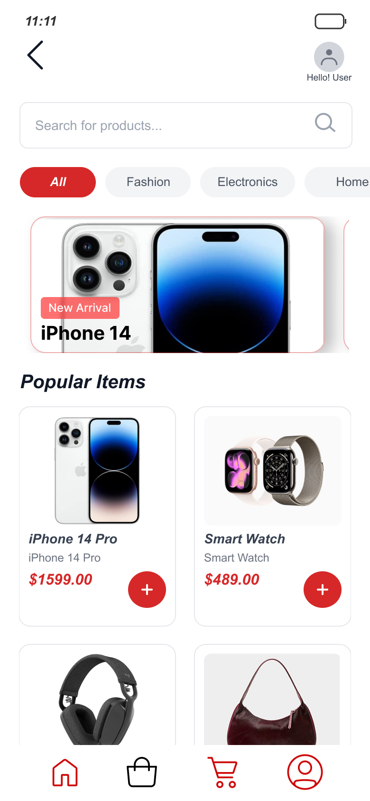
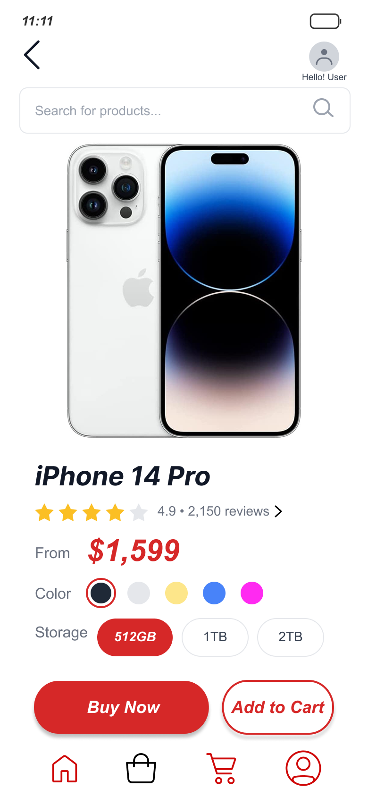
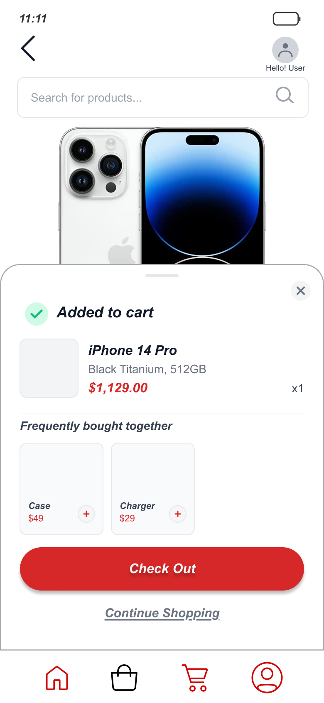
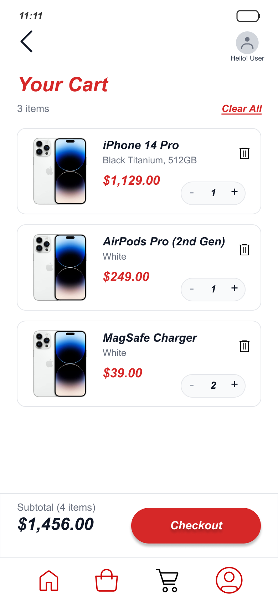
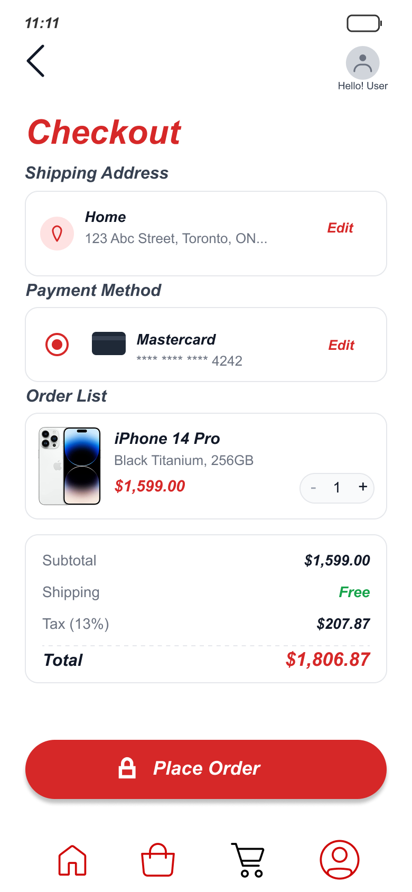
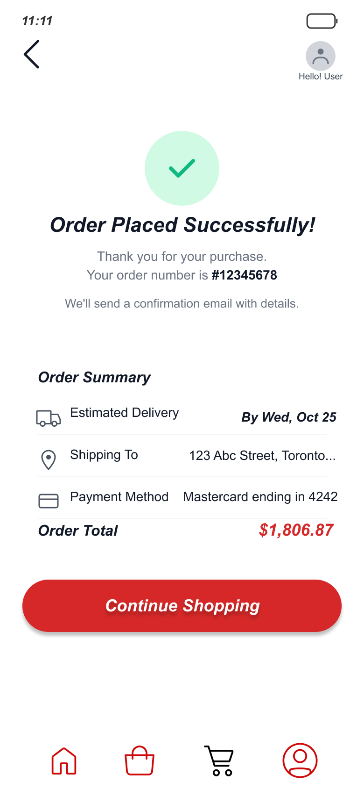
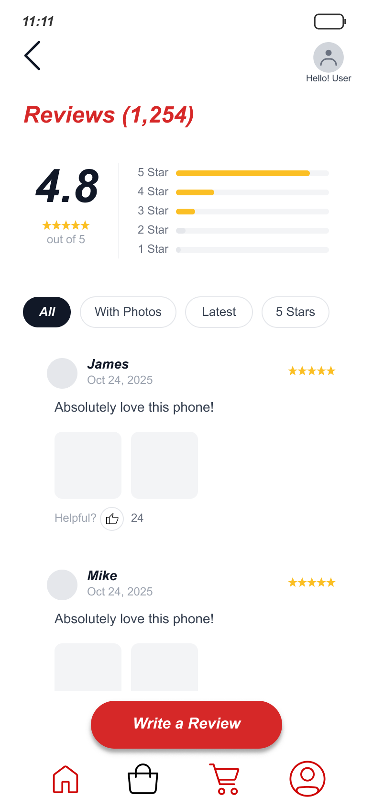

SnapBuy is a mobile shopping concept I designed for an undergraduate elective — my first real exposure to UX/UI design and to Figma. The brief was open-ended, so I gave myself a single, opinionated constraint: take the visual clutter that defines most shopping apps and design the opposite. One principle drove everything: ultra-minimalism that still does the job.
This case study isn't organized as a step-by-step process log. It's organized around a visual argument — the problem I saw, the position I took, and the specific design choices (spacing, hierarchy, typography) I used to back it up.
I built SnapBuy before I had any formal UX training, an elective I took as an undergrad, the first time I'd ever opened Figma. I didn't yet have the vocabulary for what I was doing: I couldn't have told you the term for "visual hierarchy" or "progressive disclosure." I just kept noticing that the apps I used felt exhausting, and I wanted to make one that felt calm.
I'm keeping it in my portfolio on purpose. Looking back, the instinct in it, that removing noise is itself a design act, was the right one before anyone taught it to me. This project is what made me realize design was the thing I wanted to do properly, and it's the direct reason I applied to a Master of Information to learn it with rigor. It's the earliest point on a line you can trace through the rest of this portfolio.
Looking across popular shopping platforms, the same three things kept getting between the user and the simple act of buying something:
Aggressive banners, pop-ups, and promotional layers competing for attention with the product itself.
Dense layouts, too many features at once, and unclear hierarchy that hides what actually matters.
Competing colors, motion, and non-essential UI elements that pull focus away from the decision.
So I designed around one idea: ultra-minimalism, with zero distraction — but nothing essential removed.
The hard part of minimalism isn't taking things away — it's deciding what has to stay, and making what remains carry more weight. That's a visual-language problem, and I solved it with three tools.
Cluttered apps fill every pixel because empty space feels like wasted space. I treated whitespace as an active element instead — generous margins and padding around each product so the eye lands on one thing at a time. The home screen sets that tone immediately: one hero banner instead of a stack of promos, a single row of category pills, and a product grid with room to breathe between cards — a calm, uncrowded first impression that tells the user this app won't fight them.

With distraction stripped out, the remaining elements have to guide the user on their own. I leaned on size, weight, and position to build a clear order of importance — product imagery and price dominate, supporting details recede, and the primary action is never in doubt. On the product page, a solid Buy Now outranks an outlined Add to Cart at a glance. The confirmation sheet that follows repeats the same logic: Check Out is a loud filled pill, Continue Shopping is a quiet underlined link, and the cross-sell beneath it stops at two items instead of an endless carousel. The next step is never in doubt.


When you remove decoration, type becomes the interface. A consistent type scale — clear size jumps between heading, label, and body — carries structure that I'd otherwise have to add with boxes, dividers, and color. The cart, checkout, and confirmation screens rely on it most: the same size jump separates a product name from its price on every screen, bold weight marks the one number that's actually changing — subtotal, total, order number — and a single readable column carries the whole flow without a single divider line. Paying feels light instead of laborious.



A strong visual stance can quietly go too far, so I ran five task-based usability sessions to check that "minimal" hadn't become "missing." It mostly held, but two screens needed adjustment, and that tension is the most useful thing the project taught me.
Testing showed the product page had stripped away structure people needed: specs weren't grouped, so users couldn't find key details, and the absence of reviews left them unsure at the moment of purchase. I added a categorized, scrollable spec layout and a focused review system — rating summary up top, filter chips instead of a wall of text — styled to fit the minimalism rather than break it. The lesson stuck: minimalism isn't the absence of information, it's the absence of noise.

I've kept this project honest by not polishing away its origins. Two years and a graduate program later, I can see exactly where my instinct was ahead of my craft — and where it wasn't. That gap is the point: it's the clearest evidence of how far the work has come.
Back then I designed the whole minimal concept first and tested at the end. Now I'd validate the "calm vs. cluttered" hypothesis with users up front, before committing to a full visual direction.
I applied spacing and type by eye and intuition. Today I'd define a proper scale and reusable tokens — the same instinct, but systematized so it holds up and scales.
My "clutter" problem came from observation, not study. Now I'd back the premise with competitive analysis and user research, the way I learned to in my master's work.
The core instinct — that removing noise is an act of design, not a lack of it. That conviction was right from the start, and it still drives how I work.
SnapBuy is where I found out that design was something I could think in — that a visual choice could be an argument, not just a decoration. I didn't have the training yet, but I had the instinct, and recognizing that is what pushed me to pursue UX seriously and apply to a Master of Information.
Everything else in this portfolio is what happened after I decided to learn this properly. This is where it started.